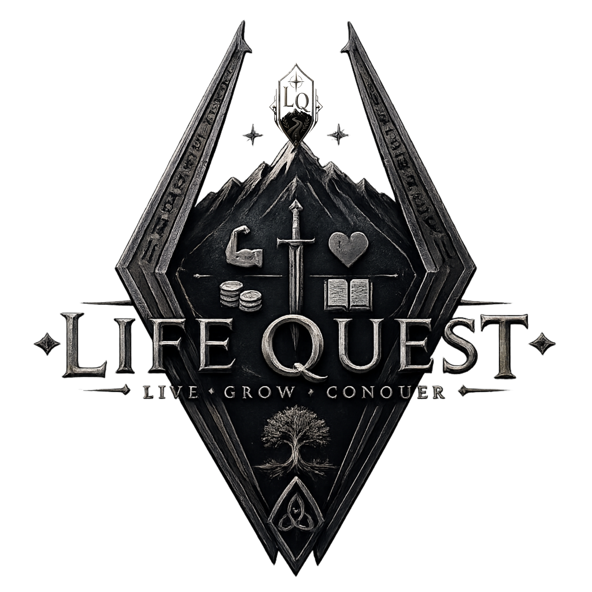

Life Quest FAQ
Questions from the road.
Frequently Asked Questions
What is Life Quest?
Life Quest is a real-life RPG app that turns ordinary life into quests, records, resources, and progress. It is built to help people return to real life with more purpose.
Is Life Quest just another productivity app?
No. Life Quest is not trying to be the deepest to-do app, journal app, inventory app, or map app. Its value is bringing simple versions of those systems together inside one meaningful life framework.
What does real-life RPG mean?
A real-life RPG means treating your actual life as the adventure. Your tasks become quests, your belongings become inventory, your reflections become journals, and your growth becomes progress.
Does Life Quest use streaks?
Life Quest is not designed around streak guilt. Life is lived in seasons. If you leave for days, weeks, or months, the app should help you return, not remind you that you failed.
How is Life Quest different from a habit tracker?
Habit trackers usually focus on repeating actions every day. Life Quest focuses on the larger road: quests, resources, journals, progress, places, and the life you are building over time.
Why is Life Quest simple?
Life Quest is meant to help users act, record, and return quickly. The app should not trap people in endless settings, formatting options, or dashboards when they are trying to live real life.
Will Life Quest have quests?
Yes. Quests are the core of Life Quest. They represent real actions: training, cooking, cleaning, repairing, exploring, organizing, learning, building, caring for family, and handling responsibilities.
Will Life Quest have inventory?
Yes. Inventory is used to record useful resources: tools, books, gear, vehicles, journals, coin, technology, and other items that support real-life quests.
Will Life Quest have journals?
Yes. Journals are planned as simple records for reflection, training, health, work, family, adventures, ideas, and other parts of life. They should work reliably before becoming complicated.
Will Life Quest have a map?
A simple map is planned. The map should tell the story of real places that matter. A pin with a title may be enough at first. The goal is meaning, not replacing Apple Maps.
When will Life Quest launch?
Life Quest is currently in development. The first version is focused on quests, inventory, the player sheet, local progress, and a simple medieval-inspired interface.
Where can I follow Life Quest?
You can follow the project on Instagram as it is being built. More updates, pages, and launch details will be added as development continues.